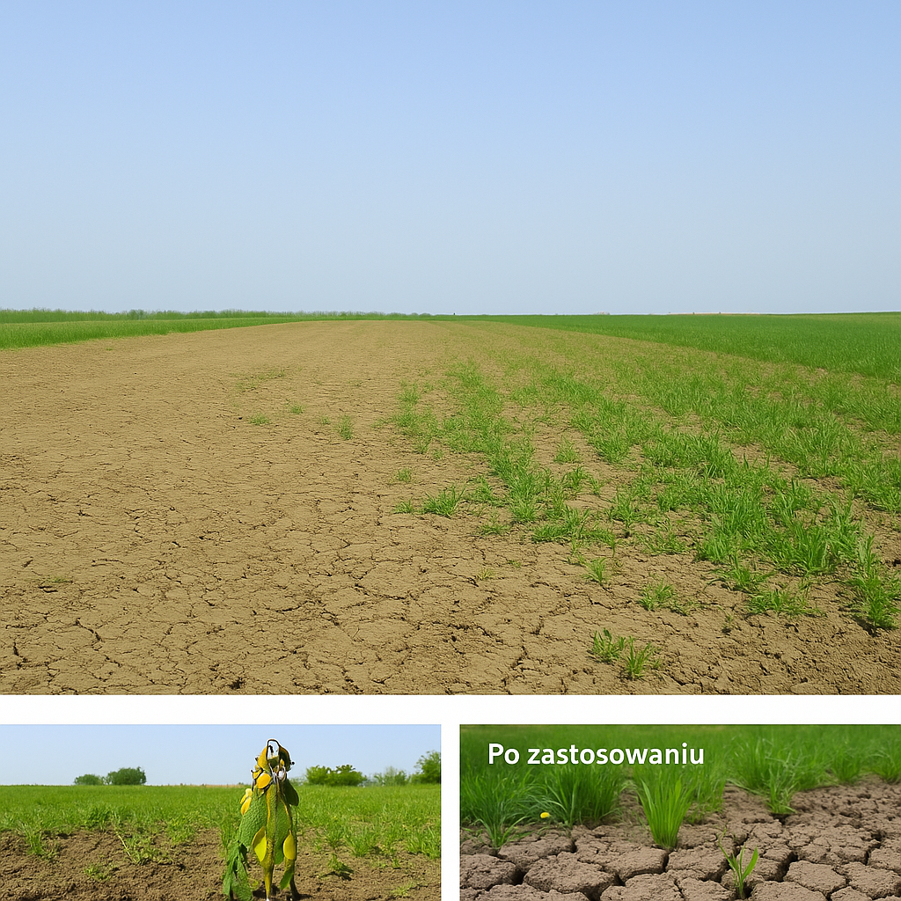

Ploner
 Przeznaczony do upraw polowych. Poprawia żyzność gleby.
Przeznaczony do upraw polowych. Poprawia żyzność gleby.
 200 kg/ha – rozsiewać równomiernie przed siewem lub po zbiorach.
200 kg/ha – rozsiewać równomiernie przed siewem lub po zbiorach.

Przed i po zastosowaniu
Viveko
 Do warzyw i sadów. Wspiera wzrost i odporność.
Do warzyw i sadów. Wspiera wzrost i odporność.
 50 ml / 10 l wody – podlewać co 2 tygodnie.
50 ml / 10 l wody – podlewać co 2 tygodnie.
Przed i po zastosowaniu
Bio Remedy
 Regeneracja zdegradowanej gleby.
Regeneracja zdegradowanej gleby.
 100 g / 10 m² – wymieszać z glebą. Stosować wiosną i jesienią.
100 g / 10 m² – wymieszać z glebą. Stosować wiosną i jesienią.
Przed i po zastosowaniu